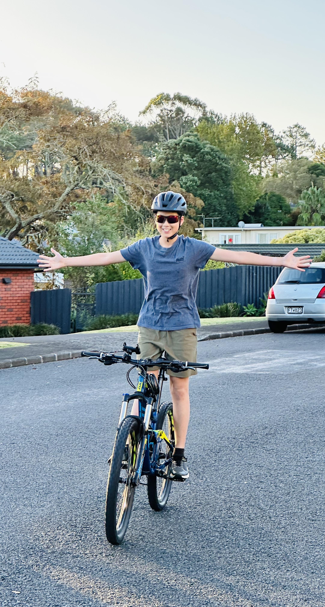
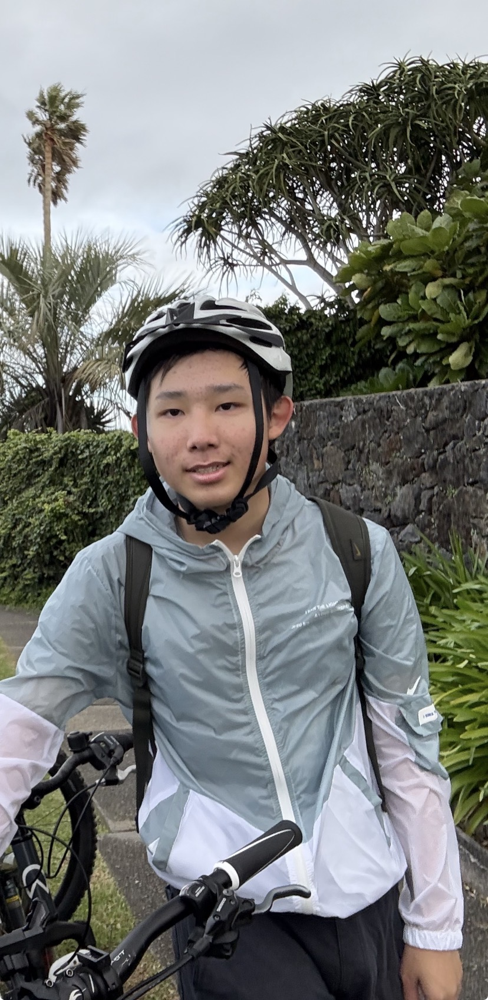
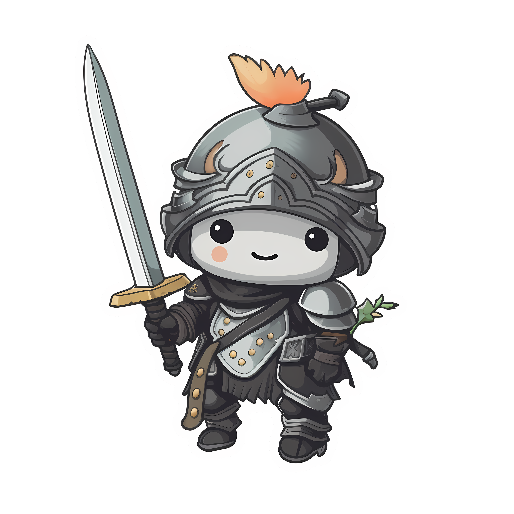
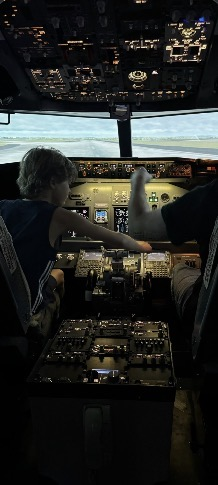

Hi, I’m Nathan and I am one of the main creators of Legend Of Fenrirak! I have decided to share some cool information with you! I am the one who came up with the idea for Legend Of Fenrirak as everyone else was stumped and all of us have been building on the idea to make the awesome board games! Later on, I decieded to write a story about Legend of Fenrirak, so far it has over 12000 words in! Also thank you for taking the time to view this simple website created by me, enjoy the rest of your day!
If any questions or you just want to know more, feel free to email: Fenrirak.guy@gmail.com
If any questions or you just want to know more, feel free to email: Fenrirak.guy@gmail.com

Hi, I’m Ronald, and I’m One of the main creators of this board game (The Legend Of Fenrirak) and I’ve decided to share some fun facts and some tips. Firstly though, I want to tell you about my favourite character, which is the Archer which is also (in my opinion) the best character in the game, but some people disagree with me (Nathan...). I think this is because everyone who's used the Archer has won (including me, I’ve won every game played with Archer), or it could be just a skill issue.

Hello everyone, I’m Justin, one of the creators of Legend Of Fenrirak. Thank you for your interest in The Legend of Fenrirak™. We have poured our hearts and souls into creating this immersive gaming experience, and we truly hope you find it an exciting journey filled with adventure and challenges. As you embark on this epic quest, remember that your strategic prowess and ability to work as a team will be crucial in overcoming the formidable Fenrirak and achieving victory. Get ready to dive into a world teeming with monsters, where every decision you make will shape your destiny. Good luck, and may the best warriors emerge victorious.

Hello, I am Ashton, I am one of the creators of Legend Of Fenrirak, I am the guy who drew most of the things in the first board game, like the characters and monsters. I think playing Legend Of Fenrirak is super cool because you get to hang out with your friends or family and do something different. It's cool to see everyone get competitive and try to win, plus there's always lots of laughing and joking around. Legend Of Fenrirak makes you think hard and plan your moves. It's also a great way to take a break from phones and screens. Legend Of Fenrirak is just a blast and makes awesome memories!